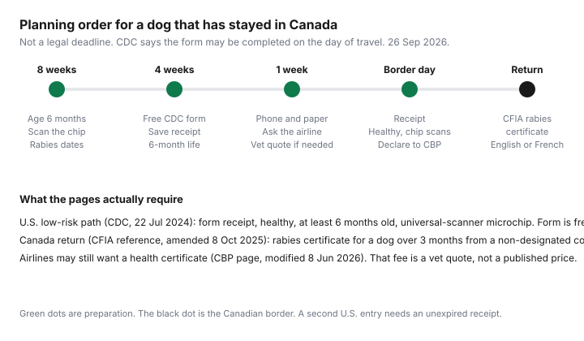

Pets · Canada
Crossing Into the U.S. With Your Dog From Canada: CDC Import Rules, Paperwork and Costs for Snowbirds
A snowbird lineup is the wrong place to learn that the dog cannot enter. The rules below are the ones on the pages opened for this draft: the U.S. Centers for Disease Control and Prevention dog-import pages, the Canadian Food Inspection Agency import reference, and U.S. Customs and Border Protection’s pets page. This is a paperwork map. It is not a veterinary exam, and it is not a promise that a particular port will wave you through. Confirm the live pages again the week you leave. Rules on a screen can move after 26 Sep 2026.
Key takeaways
- CDC’s low-risk page, dated 22 Jul 2024, says that from 1 Aug 2024 the only required document for a dog that has been only in dog rabies-free or low-risk countries for the past six months is the CDC Dog Import Form receipt. The page uses Canada–U.S. travel as its example.
- The same page also requires the dog to appear healthy, to be at least six months old, and to have a microchip a universal scanner can detect. The form is free. One dog, one form. The receipt lasts six months unless the travel pattern changes.
- Coming home, CFIA’s Import Reference Document, last amended 8 Oct 2025, is a different list. A dog over three months arriving from a country that is not designated rabies-free needs a current rabies vaccination certificate in English or French. The United States is not in the rabies-free group on the CFIA pet tool opened 26 Sep 2026.
- No Canadian vet fee for this paperwork was on those pages. The CDC form is free. A clinic visit, if an airline or a lapsed certificate forces one, is a quote from your vet.
- Your own medical cover for the season is a separate decision. It lives on the snowbird travel-insurance guide, not on the dog’s form.
CDC dog import rules (from Aug 2024): age, microchip, import form
Start on CDC’s “Bringing a Dog into the U.S.” page, which carries the date 1 Aug 2024, and then open the low-risk requirements page dated 22 Jul 2024. That second page is the one that matches a dog living in Canada and driving south, provided the dog has not been in a high-risk country for dog rabies in the six months before entry. CDC says only high-risk countries are listed on its high-risk website, and a country that is not listed is treated as dog rabies-free or low-risk. The low-risk page’s own example is a dog that travels often between Canada and the United States. This draft did not re-open the high-risk country list on 26 Sep 2026. If the dog visited anywhere else in the prior six months, check that list before you assume the short form is enough. A dog that has been in a high-risk country follows a different CDC path, including extra documents, and an unvaccinated dog from a high-risk country is not allowed in.
For the low-risk path the page describes, three conditions sit beside the form. The dog must appear healthy on arrival. The dog must be at least six months old at entry. The dog must have a microchip that a universal scanner can detect, so the dog can be identified. CDC does not, on the low-risk page opened here, add a rabies certificate to that list. The page says the Dog Import Form is the only required documentation for this path. U.S. Customs and Border Protection’s pets page, last modified 8 Jun 2026, still says every applicable requirement has to be met, that a sick dog or cat may need a veterinarian’s exam at the owner’s expense, and that a pet refused entry is returned to the country of embarkation at the owner’s expense. Declare the dog. CBP also says to contact the port ahead of time and that its CBP Link app can be used at select ports. Airline rules are extra: CBP says airlines generally require health certificates and may charge fees. Ask the carrier. That airline request is not the same sentence as CDC’s “only required documentation” line.
The form itself is filled in online by the importer, owner, or shipper. Each dog needs its own form. CDC says you may complete it on the day of travel and recommends doing it a few days ahead, or up to six months ahead. The receipt arrives by email. Show it printed or on a phone to customs, and to the airline if you fly. It is valid for six months unless the dog visits a high-risk country or leaves from a different dog rabies-free or low-risk country than the one named on the receipt. CDC’s example: the same receipt can cover repeated entries from Canada until the date on the receipt; a trip that changes the departure country, the page uses France, needs a new receipt. The cost line on that page is one word: free. Dogs on this path may enter at any airport, seaport, or land border. The NEXUS and Global Entry guide is about your own trusted-traveller card. It does not replace the dog’s receipt.
Rabies certificates
Read the rabies line twice, because the two borders do not ask for the same paper. CDC’s low-risk page says a rabies certificate is not part of the document set for a dog that has stayed in dog rabies-free or low-risk countries. CDC’s main dog page still says it recommends that all dogs be vaccinated against rabies, and CBP’s pets page says CDC requires valid proof of rabies vaccination for dogs arriving from countries at high risk for dog rabies. A recommendation and a high-risk rule are not the low-risk document list. If your dog’s last six months are only Canada, the CDC page opened here does not make the rabies certificate the U.S. entry document. The receipt, the age, the microchip, and a dog that appears healthy are that list.
The certificate becomes the document on the way back into Canada, which is the next section, and it is also the document an airline may ask to see even when CDC does not. Keep the certificate the clinic already gave you. Check the vaccination date against the trip, including the day you re-enter Canada, not only the day you leave. If the certificate will lapse while you are away, book the visit before you go. No page opened for this draft published a national price for writing or updating that certificate. Ask the clinic that holds the file.
Returning to Canada: CFIA rules
CFIA’s pet tool and the Import Reference Document incorporated into the Health of Animals Regulations are the return rules. The reference was last amended on 8 Oct 2025. It says pet dogs are not subject to post-import quarantine in Canada. A dog under three months does not need rabies vaccination or a rabies-free-country certificate. That age does not help a snowbird who also has to satisfy CDC’s six-month minimum to enter the United States. A puppy that is legal to come home can still be too young to go south.
For a personal dog that is eight months or older, the reference splits countries. From a country the Minister has designated rabies-free, several certificate options exist, including a current rabies vaccination certificate. From a country that is not designated rabies-free, the dog may enter if it is accompanied by a valid rabies vaccination certificate, in English or French, issued by a licensed veterinarian in the country of origin, which identifies the dog and shows it is currently vaccinated. An antibody-titre option is also written into that section. The CFIA pet tool opened 26 Sep 2026 lists Australia, Fiji, Finland, Iceland, Ireland, Japan, New Zealand, Sweden, and the United Kingdom as the rabies-free group on that screen. The United States appears as its own frequent origin, not inside that group. Treat a return from a U.S. stay as the non-designated path unless a CFIA page you open that week says otherwise. Dogs eight months or older are not given a health-certificate requirement in that part of the reference. A health certificate with a 72-hour exam window is written for pet dogs under eight months that are not travelling with the owner, and it adds vaccine lines for distemper, hepatitis, parvovirus, and parainfluenza. An accompanied dog under eight months follows the rabies rules for its country type and does not pick up that unaccompanied health certificate. Assistance dogs used by the person importing them are in their own subsection. If the dog is for sale, adoption, or another commercial purpose, you are outside this personal-pet reading. Use the commercial path on the CFIA tool.
Vet visit costs for paperwork
The only price on the CDC low-risk page is that the Dog Import Form costs nothing. CBP says a further exam, if a dog or cat looks sick at the port, is at the owner’s expense, and that detention while a decision is made can also be at the owner’s expense. Neither page prints a clinic fee, a microchip fee, or a health-certificate fee in Canadian dollars. This guide will not invent one. If the microchip will not scan, if the rabies certificate will expire before you re-enter Canada, or if the airline’s desk asks for a health certificate, phone the clinic and ask for a quote for that visit. Put the quote in the trip budget beside fuel, not inside a made-up national average.
The rest of the dog’s year, food and veterinary care at home, is the Ontario veterinary association cost sheet. Do not add a snowbird paperwork guess on top of those lines. A season in the United States also changes your own insurance question: provincial coverage is not a travel policy. Read the pre-existing-condition travel guide for the human side, and the U.S. trip budget guide for the rest of the crossing. The dog’s form is not an entry in those worksheets.
Snowbird timing
October and November departures are why this page exists, and CDC does not impose an eight-week legal deadline. The timeline in the chart is a planning order, not a regulation. Eight weeks out, confirm the dog will be at least six months old on the day you enter the United States, have the clinic scan the microchip with a universal scanner, and read the rabies certificate’s dates through the day you expect to re-enter Canada. Four weeks out is a sensible time to submit the free CDC form and save the receipt, because the page says the receipt can be prepared up to six months ahead and you can also do it on the day. One week out, confirm the receipt is on a phone that will work at the booth and on paper in the glove box, and ask the airline, if you are flying, whether it wants a health certificate anyway. Border day is the receipt, a dog that appears healthy, a chip that scans, and a declaration to CBP.
Count the six-month life of the receipt against any second entry, not against the drive home. Entering the United States in early November uses the receipt that day. Returning to Canada in April is a CFIA day, not a second CDC entry. A shopping trip back across the border in March is another U.S. entry, and the receipt has to be unexpired, with Canada still the departure country named on it. If you filled the form in early September for a late-April re-entry to the United States, read the expiry date on the receipt before you rely on it. The road-trip fuel and camping guide is the kilometres and campgrounds. It does not carry the dog’s papers. Leave enough time at the port that a scan or a question does not make the rest of the day’s drive the emergency.
Checklist
Use the table as a pack list. The cost column stays “ask your vet” wherever a page did not print a fee. If a cell says the paper is not CDC’s low-risk document, do not throw it away. The return trip or the airline may still want it.
| Requirement | U.S. entry (CDC low-risk path) | Return to Canada (CFIA) | Where to get it | Cost source |
|---|---|---|---|---|
| Age | At least six months old on the day of entry. | No six-month minimum in the reference. Under three months, rabies vaccination is not required. Under eight months, accompanied and unaccompanied dogs are treated differently. | Your own record of the dog’s age. A puppy under three months may need proof of age for CFIA. | No fee on the pages opened. |
| Microchip | Required. Must be detectable with a universal scanner. | The rabies section opened here identifies the dog. It does not, in the sentences read for this draft, add a separate chip rule for a personal return from the United States. | The clinic that implanted the chip. Ask them to scan it before you leave. | Ask your vet for a quote if the chip is missing or will not scan. No national fee was opened. |
| CDC Dog Import Form receipt | Required for every dog. Free. One form per dog. Receipt valid six months if the departure country does not change and the dog has not been in a high-risk country. | Not a CFIA document. The reference does not ask for this receipt. | CDC’s online form. The receipt is emailed. Print it or keep it on the phone. | Free, as printed on the CDC low-risk page. |
| Rabies certificate | Not on CDC’s low-risk document list. Still recommended by CDC in general, and required by CDC for high-risk countries. An airline may ask anyway. | For a dog over three months returning from the United States, treated here as not rabies-free on the CFIA tool: a valid certificate in English or French that identifies the dog and shows it is currently vaccinated. | The licensed veterinarian who vaccinated the dog. | Ask your vet for a quote if you need a visit to renew or reprint it. |
| Health certificate, if required | Not on CDC’s low-risk document list. CBP says airlines generally require health certificates. Ask the carrier. | Not required by the reference for a personal dog eight months or older. Required, with a 72-hour exam, for a pet dog under eight months that is not accompanied by the owner. | A licensed veterinarian, if the airline or the unaccompanied-puppy rule applies. | Ask your vet for a quote. No fee was published on the pages opened. |

Sources & date stamps
- CDC, Bringing a Dog into the U.S., dated 1 Aug 2024. Opened 26 Sep 2026. Requirements depend on where the dog was vaccinated and where it has been in the prior six months. High-risk country list was not re-opened in this draft; the page tells you to check it.
- CDC, Entry Requirements for Dogs from Dog-Rabies Free or Low-Risk Countries, dated 22 Jul 2024. From 1 Aug 2024 the Dog Import Form is the only required document on that path. Healthy on arrival, at least six months old, microchip readable by a universal scanner. Form is free, one dog per form, receipt valid six months. Canada–U.S. travel is the page’s example. Any airport, seaport, or land border.
- U.S. Customs and Border Protection, Bringing Pets and Wildlife into the United States, last modified 8 Jun 2026. Declare the animal. Refusal and a sick-animal exam can be at the owner’s expense. Airlines generally require health certificates and may charge fees. CDC rabies proof is described for high-risk countries.
- CFIA, Bringing animals to Canada, pet import tool, opened 26 Sep 2026. Rabies-free countries shown: Australia, Fiji, Finland, Iceland, Ireland, Japan, New Zealand, Sweden, and the United Kingdom. The United States is listed separately.
- CFIA, Import Reference Document, last amended 8 Oct 2025, domestic dogs and domestic cats. No post-import quarantine for pet dogs. Rabies certificate rules by age and by whether the country is designated rabies-free. Health certificate for unaccompanied pet dogs under eight months, within 72 hours of the exam.
- No vet-clinic fee schedule was opened. Paperwork that needs a visit is “ask your vet for a quote.”
Frequently asked questions
What does the CDC require for dogs entering the U.S. from Canada?
On the low-risk page dated 22 Jul 2024, a dog that has been only in dog rabies-free or low-risk countries for six months needs a CDC Dog Import Form receipt, must appear healthy, must be at least six months old, and must have a microchip a universal scanner can read. That page uses Canada–U.S. travel as its example and says the form is the only required document on this path. If the dog has been in a high-risk country, stop and use CDC’s high-risk rules instead. Confirm the high-risk list the week you travel.
Does my dog need a microchip?
Yes for U.S. entry on the page opened here. CDC says the dog must have a microchip that can be detected with a universal scanner so the dog can be identified. Have the clinic scan it before you leave, because a chip that will not read is a problem you cannot fix at the booth. This draft did not open a Canadian price for implanting a chip. Ask your vet for a quote if the dog does not have one.
What is the CDC Dog Import Form?
It is the free online form for each dog, completed by the importer, owner, or shipper. CDC emails a receipt you can print or show on a phone. You may fill it in on the day of travel; CDC recommends a few days to six months ahead. The receipt lasts six months and can be reused for entries from the same departure country, the page’s example is Canada, unless the dog visits a high-risk country or leaves from a different low-risk country.
What do I need to bring my dog back into Canada?
CFIA’s Import Reference Document, last amended 8 Oct 2025, does not ask for the CDC receipt. A personal dog over three months returning from the United States, which was not in the rabies-free group on the CFIA tool opened 26 Sep 2026, needs a valid rabies vaccination certificate in English or French that identifies the dog and shows it is currently vaccinated. Pet dogs are not quarantined after import under that note. A dog eight months or older is not given the unaccompanied-puppy health certificate in the section read here. Confirm the tool again before you reach the Canadian booth.
Do cats have the same rules?
No. The CDC Dog Import Form, the six-month age rule, and the universal-scanner microchip line opened here are written for dogs. CBP’s pets page, last modified 8 Jun 2026, says dogs and cats must be healthy on arrival, and that a sick cat may need an exam at your expense. CFIA’s reference treats domestic cats separately: under three months, no import restrictions in that section; at three months or older, a rabies certificate in English or French, or a rabies-free-country history, or a rabies antibody test. A CDC cat-import address tried for this draft did not resolve. Use CFIA’s cat path and CDC’s current animal pages before you travel with a cat.